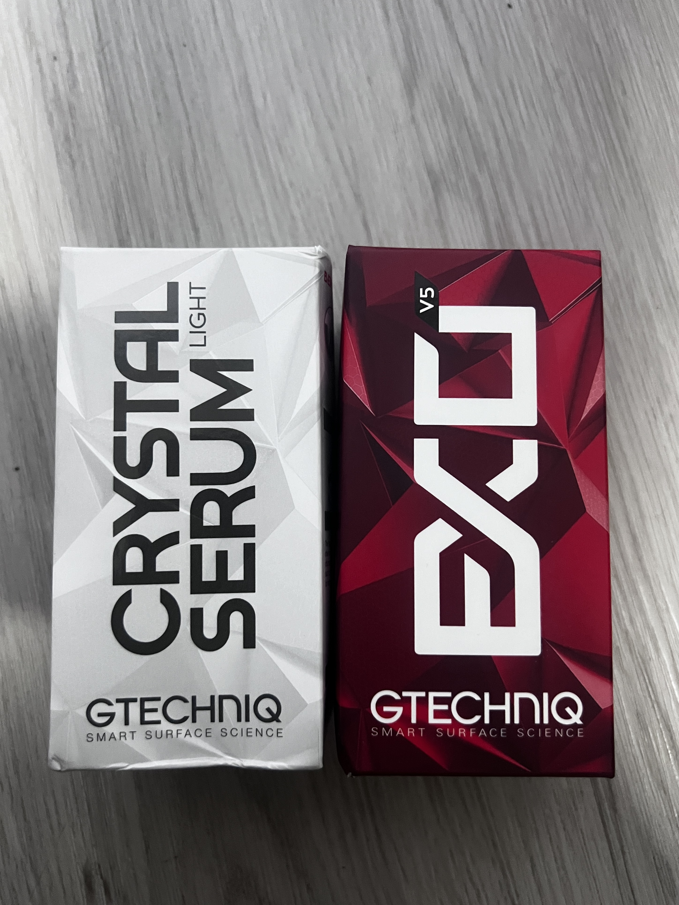

Ceramic Coating: Our Ceramic Coating service is designed to restore and protect your vehicle's finish. The process starts with a complete decontamination wash to remove embedded contaminants such as industrial fallout, brake dust, tar, and tree sap. Following this, we perform a 2-Step Machine Paint Correction (Cut & Polish) to eliminate swirls, scratches, hazing, etchings, and other imperfections, bringing your vehicle's finish to a high standard.

$700 (car) - $900 (truck/SUV)
We apply 1 layer of Gtechniq Crystal Serum Light (CSL) followed by 2 layers of Gtechniq EXO v5. This combination provides exceptional protection, adding depth and gloss while safeguarding against elements such as brake dust, salt, UV exposure, contaminants, chemicals, and bird droppings—assuming proper maintenance.
Our ceramic coating provides a hydrophobic layer, which repels water and keeps your vehicle cleaner for longer. It also enhances the paint's depth and clarity, giving your car a glossy and smooth finish.